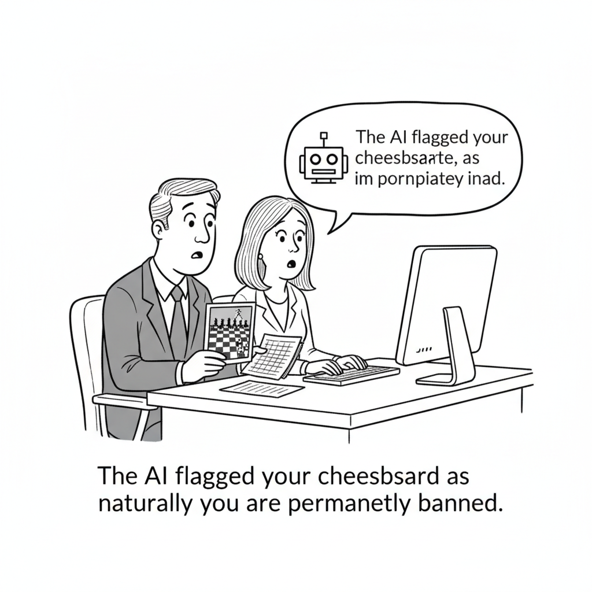

Microsoft has begun quietly swapping in its homegrown MAI models to power AI features in Excel and Word, reducing its reliance on the OpenAI and Anthropic software it has spent billions licensing. The move puts one of the industry's biggest AI buyers squarely inside a trend that has been building for weeks: the era of spending freely on frontier tokens is giving way to a colder calculus about what those tokens actually return.
The subtext is that even the companies selling the AI dream are now managing its cost. Microsoft can afford premium models better than almost anyone, so its decision to route routine tasks through cheaper in-house models is less about survival than about margin discipline, and a signal to every enterprise still writing blank checks that the bill has finally arrived.
Open-source and frontier models aren't really competing head-to-head, the argument goes; they occupy two phases of the same lifecycle. Expensive frontier models prove out a use case, then cheaper open-weight alternatives mature to serve it, while the frontier labs keep their pricing power at the bleeding edge. It's the optimistic counterpoint to today's cost-cutting anxiety.
AI Culture · Cartoon

"The AI flagged your chessboard as inappropriate, so naturally you're permanently banned."
Discord acknowledged that a bug in its AI moderation system mistakenly banned more than 8,000 users after harmless images, spreadsheets, chessboards, and game textures among them, were flagged as harmful. All affected accounts are being restored. It's a small, almost comic failure that gestures at a real problem: automated moderation at scale keeps confusing the mundane for the menacing.
Meta unveiled Muse Image, a new generator threaded through the Meta AI app, Instagram Stories, and WhatsApp. The controversy was immediate: a feature that lets users manipulate other people's public Instagram profile photos with AI, no explicit consent required. The launch reprises Meta's familiar pattern of shipping a capable tool and sorting out the consent questions in public, afterward.
SambaNova Systems has secured $1 billion in a Series F first close led by General Atlantic, pegging the company at an $11 billion valuation just five months after its last mega-round. The pace underscores how much capital is still chasing an independent alternative to Nvidia, even as the wider industry frets about AI's return on investment.
ZML, a French startup endorsed by Turing Award winner Yann LeCun, released inference software that lets a single model run across Nvidia, AMD, Google TPU, and Apple Metal hardware at once. The pitch is squarely of the moment: cut inference costs and break the vendor lock-in that makes AI so expensive to serve.
Deutsche Bank economist Jim Reid cautions that meaningful AI-driven productivity gains are still years out, and that if the technology fails to deliver, it could make already-unsustainable global debt levels worse. It's the sober macro frame beneath a day full of cost-cutting: a lot of borrowing is riding on a payoff that hasn't arrived.
Anthropic's Claude Cowork is now on web and mobile for Max subscribers, letting users kick off a task at their desk and track its progress from a phone. The expansion marks a deliberate step beyond coding toward general office automation, and another front in the escalating fight over who owns the agentic workday.
Forterra has deployed more than 100 self-driving ATVs into Ukrainian conflict zones over nine months, in what it calls the largest autonomous ground-vehicle combat deployment by a U.S. defense-tech company: 1,100-plus missions, 2,500-plus miles, and 52 casualties evacuated, mostly under remote control. The autonomy story quietly graduated from warehouses to the front line.
Founded by brothers Patrick and Ryan Coughlin, Savi Security raised $7 million in seed funding to launch an app that flags AI-generated scams in real time, from fraudulent texts and emails to spoofed calls and voicemails, plus a live-call monitoring feature aimed at threats like fake kidnapping-ransom demands. As generative fraud gets more convincing, a consumer-grade defense layer starts to look inevitable.
Matthew Berman walks through Anthropic's research on the "J-space," a global workspace inside language models where verbalizable representations appear to enable deliberate, conscious-like reasoning. The study guide breaks down what the finding means, why it matters for interpretability, and where the claims run ahead of the evidence.
Word Search
Find this week's AI terms. Click a start cell, then an end cell (or click and drag).
Chase AI runs through five open-source repos that plug the most common gaps in a Claude Code workflow, from context and memory management to guardrails and automation. The study guide names each tool, the problem it solves, and how to wire it into a real setup.
Microsoft is quietly swapping its own homegrown MAI models into Excel and Word, cutting the OpenAI and Anthropic tokens out of the two most-used apps on Earth, because even the company that helped fund the frontier has decided the frontier is too expensive to run at scale. On the same day, a French startup blessed by Yann LeCun shipped free software that runs one model across Nvidia, AMD, Google, and Apple silicon interchangeably, and a Deutsche Bank economist warned that if AI's promised productivity never shows up, it could make the world's debt load unpayable. Today's issue is a single argument told a dozen ways: the industry has stopped asking what AI can do and started asking what it costs, and every player is now scrambling to lower the floor.
▶Listen to the Digest~7 min
Today's Headlines
The Cost Floor
Microsoft is deploying its own MAI models inside Excel and Word. The move cuts reliance on OpenAI and Anthropic for routine in-app AI features and joins an industry-wide cost-cutting trend. When the largest single distributor of frontier AI decides to self-supply its flagship productivity apps, it is a signal that per-token economics have become the deciding factor, not raw capability.
Why open-source AI isn't hurting Anthropic yet. TechCrunch frames frontier and open-weight models as two phases of one lifecycle: frontier models prove a use case exists and command pricing power, then cheaper open-weight models mature to serve that demand at volume. The open-source wave functions less as a competitor and more as a cost floor the frontier labs price against, which is exactly why Anthropic keeps its margins even as free models proliferate.
ZML releases free multi-vendor inference software. The French startup, endorsed by Yann LeCun, lets a single model run across Nvidia, AMD, Google TPU, and Apple Metal hardware to break vendor lock-in and cut inference costs. It attacks the same problem as Microsoft's in-housing from the other direction: not building your own model, but freeing the one you have from any single chip supplier.
SambaNova raises a $1 billion Series F at an $11 billion valuation. The first close, led by General Atlantic, lands just five months after the AI-chip maker's last mega-round. Capital is flooding into anything that promises cheaper inference, and SambaNova's pitch, custom silicon that undercuts Nvidia on cost-per-token, is precisely the bet the market is now willing to fund at scale.
Deutsche Bank warns the productivity payoff may be years away. Economist Jim Reid argues AI's measurable productivity gains remain distant and that if the technology fails to deliver, it could worsen an already unsustainable global debt burden. It is the macro counterweight to every optimistic capex announcement: the spending is real and immediate, the returns are hypothetical and deferred.
Meta's Image Play
Meta launches Muse Image across its apps, and the backlash is instant. The generator rolls out in the Meta AI app, Instagram Stories, and WhatsApp. Meta Superintelligence Labs says Muse Image adds agentic tool use and self-refinement and ranks second on Arena, with a Muse Video preview to follow. But a feature that lets users AI-manipulate strangers' public Instagram profile photos without consent drew immediate criticism, a familiar pattern of shipping capability first and reckoning with consent second.
Ben Thompson writes Zuckerberg's earnings-call script. Stratechery's "A Script for Mark Zuckerberg" imagines a speech reframing Meta's enormous AI infrastructure spend as core to its advertising engine, while reflecting candidly on past platform and Reality Labs missteps. It reads as a strategic case that Meta's AI bet only pays off if it flows back into ads, not as a standalone product line.
Agents Off the Screen
Claude Cowork comes to web and mobile for Max subscribers. Users can now start a task on desktop and get updates on their phone, marking Anthropic's push from coding tools toward general office automation. Cowork's expansion signals the agent battleground moving out of the IDE and into the everyday knowledge-work stack, where the addressable market is far larger.
Forterra deployed 100+ self-driving ATVs in Ukraine over nine months. The vehicles ran 1,100+ missions across 2,500+ miles and evacuated 52 casualties, mostly under remote control, in what TechCrunch calls the largest autonomous ground-vehicle combat deployment by a US defense-tech firm. It is a stark reminder that the same autonomy stack powering consumer agents is being battle-tested in an active war zone.
Savi Security raises $7M seed to catch AI scams in real time. Founders Patrick and Ryan Coughlin built a consumer app that flags AI-driven fraud in texts, emails, calls, and voicemails, including live-call monitoring against fake kidnapping-ransom scams. As generative tools lower the cost of convincing fraud, a defensive consumer layer becomes its own funded category.
Discord admits an AI moderation bug wrongly banned 8,000+ users. The system flagged harmless images, spreadsheets, chessboards, and game textures, as violations before accounts began being restored. It is a clean cautionary tale about deploying automated classifiers at scale without adequate human review, and the reputational cost when they misfire.
Understanding the Machine
Anthropic's "J-space" research maps how LLMs actually reason. Matthew Berman's video breaks down the finding of a global workspace inside language models where verbalizable representations enable deliberate, conscious-like reasoning, as opposed to opaque pattern-matching. It is a rare piece of interpretability work that connects mechanistic detail to the everyday experience of a model "thinking through" a problem.
Zvi Mowshowitz analyzes the same research in "No Space Like J-Space." His companion write-up pressure-tests Anthropic's global-workspace claims and situates them in the broader interpretability debate. Paired with the video, it is the week's most substantive attempt to answer the durable question of what these systems are doing under the hood.
Chase AI catalogs five open-source repos that fix Claude Code's rough edges. The video walks through five community tools that patch common workflow gaps in Claude Code, the kind of ecosystem tooling that emerges once a platform is widely adopted enough to have well-known pain points worth fixing.
Simon Willison ships sqlite-utils 4.0. The release adds schema migrations, nested transactions via db.atomic(), and compound foreign key support. It is unglamorous plumbing, but the durable kind: the data-wrangling substrate that AI pipelines quietly depend on.
LeRobot v0.6.0 brings world models to open robotics. The update ships world-model policies that imagine future states, reward models, six new simulation benchmarks, depth sensing, VLM-based annotation, and cloud training. It pulls frontier robot-learning techniques into an accessible open framework, the same democratization arc playing out in language models.
The Deployment Plumbing
Hugging Face models now deploy to Amazon SageMaker Studio in one click. The integration collapses the friction between the open-model hub and enterprise AWS infrastructure. It is a small convenience that compounds: the easier it is to move an open model into production, the stronger the cost case against paying frontier API prices.
Hugging Face lands on Microsoft Foundry Managed Compute. One-click deploy with enterprise governance brings open-weight models into Microsoft's managed enterprise stack, the same week Microsoft in-houses its own models in Office. The two moves rhyme: Microsoft is building every path that reduces dependence on external frontier APIs.
SkyPilot and Hugging Face offer zero-egress storage. The combination gives multi-cloud compute a centralized hub with no egress fees, attacking one of the quietest and most punishing line items in AI infrastructure. Egress charges are the toll booths of the cloud, and eliminating them is pure cost discipline.
The Throughline
Read together, today's twenty stories describe an industry crossing from abundance to austerity. For three years the operating assumption was that capability was the constraint and cost would take care of itself, so everyone spent freely to be first. That assumption broke this week, in public, from multiple directions at once. Microsoft, the company most responsible for making frontier AI ubiquitous, decided the frontier was too costly to keep inside Excel. ZML built a way to escape any single chip vendor's pricing. SkyPilot went after egress fees. Hugging Face made open models a one-click substitute for paid APIs on both AWS and Azure. None of these are capability stories. Every one is a cost story.
The TechCrunch lifecycle framing is the key that unlocks the rest. Frontier and open-weight models are not really competitors; they are two stages of the same maturation curve. The frontier proves a use case is possible and, for a window, charges a premium for it. Then open-weight models catch up and serve that same demand at a fraction of the price. What changed this week is that the second stage has arrived for enough use cases that buyers can finally act on it, and they are. The reason open source "isn't hurting Anthropic yet" is precisely that Anthropic has moved on to proving the next use case, where it still has pricing power. Cowork's jump to mobile is that move in miniature: get out of the commoditizing coding market and into general office automation before the floor rises underneath you.
And note where the capability work is still happening, because it hasn't stopped, it has just changed character. The J-space research and LeRobot's world models are about understanding and generalizing, not just scaling. The frontier increasingly justifies its premium not by being bigger but by being more legible and more capable in ways open models can't yet copy. Interpretability is becoming a product feature, because a model you can explain is a model an enterprise can trust, audit, and pay more for.
The Deutsche Bank warning is the shadow over all of it. Every cost-cutting move this week is rational only if the productivity payoff eventually arrives to justify the spending that came before. If Jim Reid is right that the gains are years away, then the entire industry is optimizing the cost of an engine whose output remains unproven, and doing so on borrowed money.
The Bigger Picture
What we are watching is a technology transition from its speculative phase into its industrial phase, and industrial phases are won on unit economics, not demos. The historical rhyme is not the smartphone launch but the maturation of any capital-intensive utility: the exciting question shifts from "can we build it" to "who can deliver it cheapest, on whose hardware, with what margin." The proliferation of vendor-neutral inference, open-model deployment paths, and in-house model substitution all point to the same endgame, a market where the model itself commoditizes and the durable advantage lives in distribution, trust, and cost structure.
That reframing carries real social stakes. When Meta ships an image generator that can manipulate strangers' photos without consent, when Discord's automated moderation wrongly bans thousands, and when defense-tech firms field autonomous vehicles in combat, the through-line is an industry deploying faster than its guardrails mature, precisely because the competitive pressure is now about cost and speed rather than careful capability gains. Savi Security getting funded to detect AI scams is the market pricing in that same reality: the harms are arriving on the same cost curve as the benefits.
The uncomfortable macro question is whether the debt-fueled buildout meets its return before patience runs out. Deutsche Bank's warning and the SambaNova mega-round are two readings of the same bet placed five months apart, one cautioning that the productivity may never come, the other wagering a billion dollars that cheaper inference will unlock it. Both cannot be right, and 2026 is starting to look like the year we find out which.
What to Watch
Whether Microsoft's MAI in-housing spreads beyond Office. If the homegrown models prove good enough for Excel and Word, watch for them to creep into Copilot's higher-stakes surfaces, and watch how OpenAI responds to losing token volume inside its own largest partner. This is the clearest test yet of whether frontier APIs are becoming a commodity input.
The Muse Image consent backlash. The feature that lets users manipulate strangers' public profile photos is the kind of thing that draws regulatory attention fast. Watch whether Meta walks it back, and whether the Muse Video preview ships with tighter guardrails after the reaction.
The productivity-versus-debt reckoning. Deutsche Bank framed the risk; the next few quarters of enterprise AI ROI data will start to settle it. Watch whether the cost-cutting moves of this week translate into visible margin expansion for AI buyers, or just cheaper spending on returns that still haven't materialized.
Go Deeper
We Just Figured Out How AI Actually Works (J-Space) — Matthew Berman's walkthrough of Anthropic's J-space research is the most accessible entry point into the week's biggest interpretability finding: the discovery of a global workspace inside language models where verbalizable representations enable deliberate, conscious-like reasoning rather than opaque pattern-matching. The guide breaks down the key properties of the J-space and why a model whose reasoning can be inspected is a model enterprises can actually trust, the exact quality the frontier labs are betting will justify their premium as open-weight models close the raw-capability gap.
5 Open Source Repos That Fix 95% of Claude Code's Problems — Chase AI's tour of five community-built tools is a practical companion to today's cost-discipline theme: rather than paying for more capability, it shows how to close the everyday workflow gaps in Claude Code with free, open-source tooling. The guide catalogs each repo, the specific pain point it solves, and how they fit together into a smoother agentic-coding setup, the kind of ecosystem maturity that only forms once a platform is adopted widely enough for its rough edges to be worth fixing.